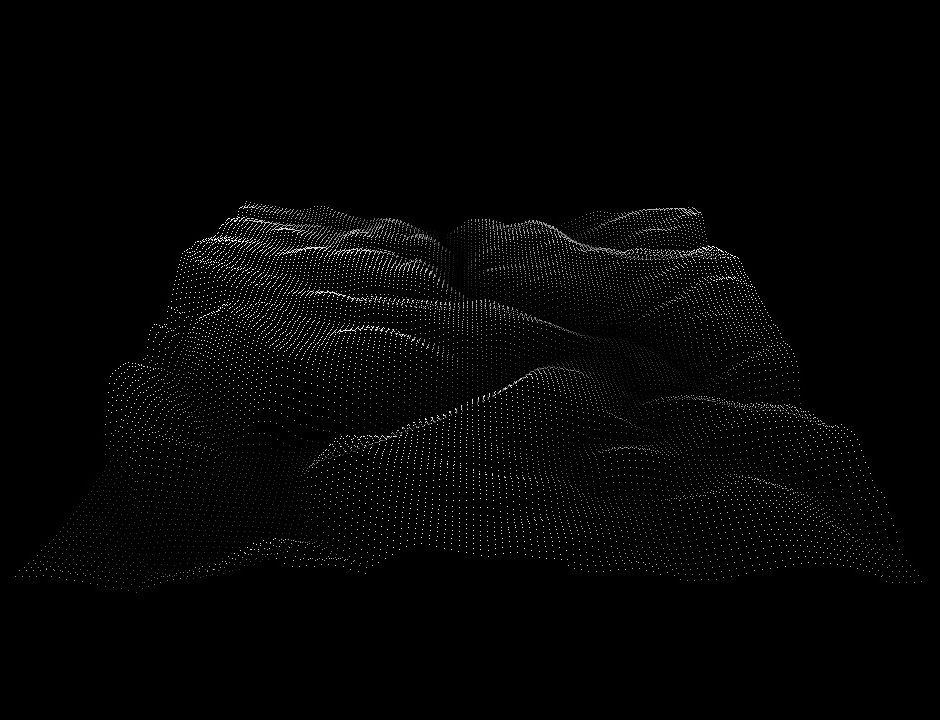
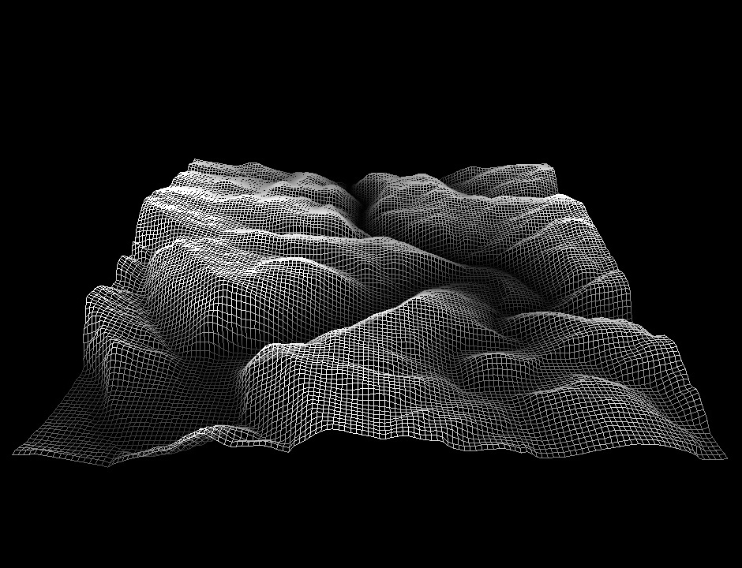
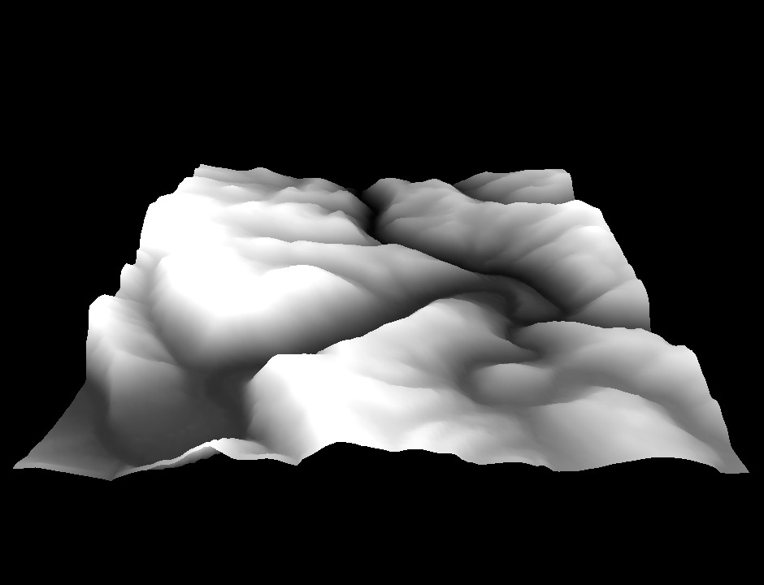
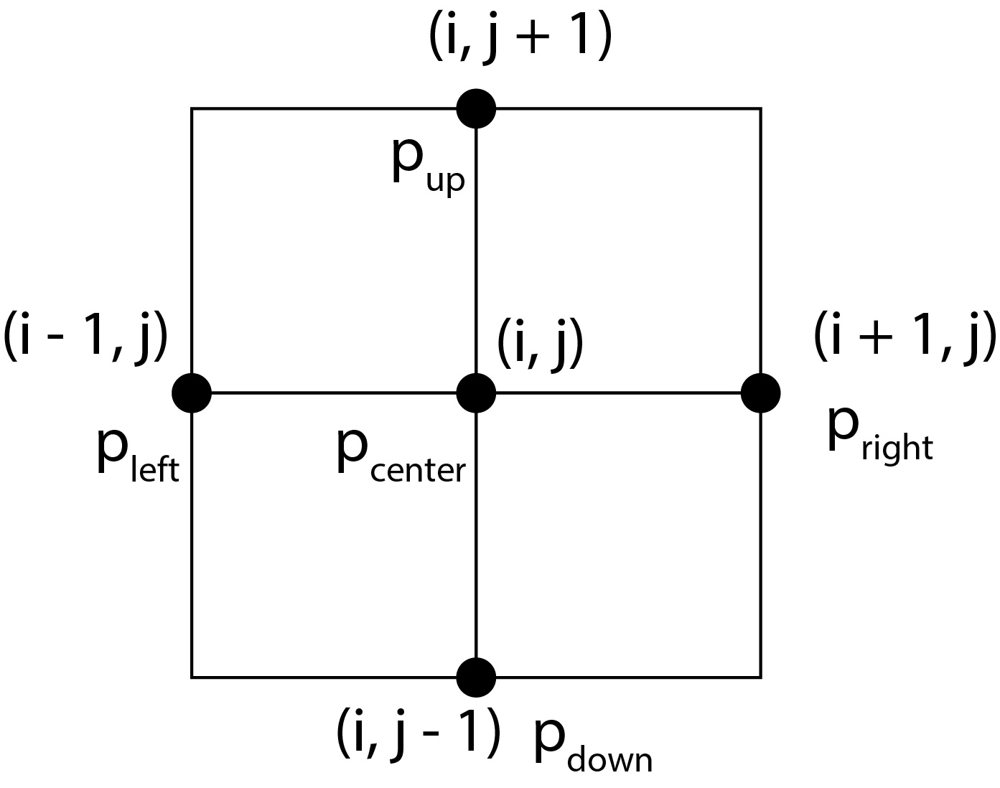
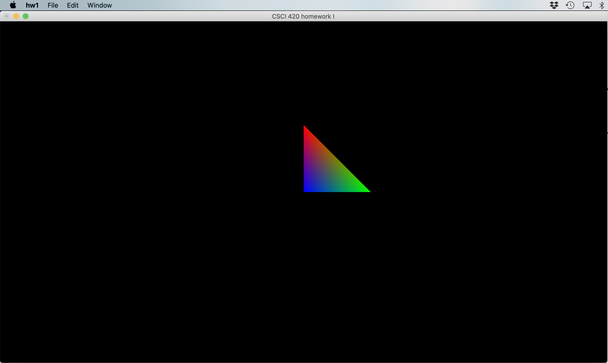
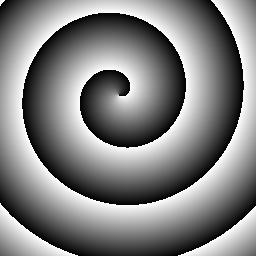
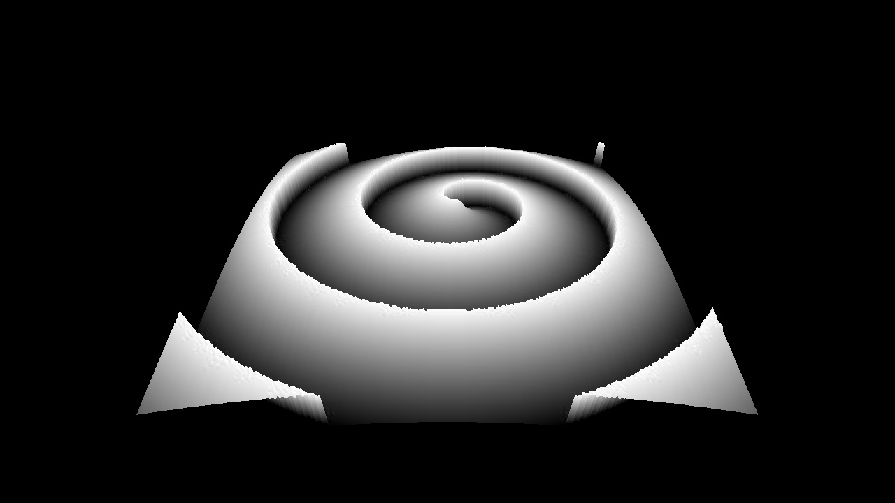
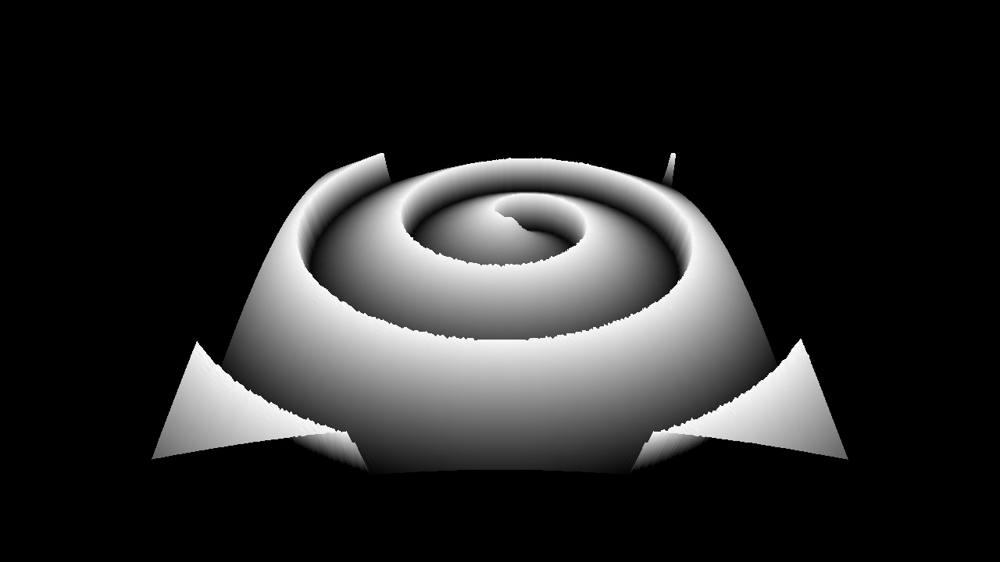
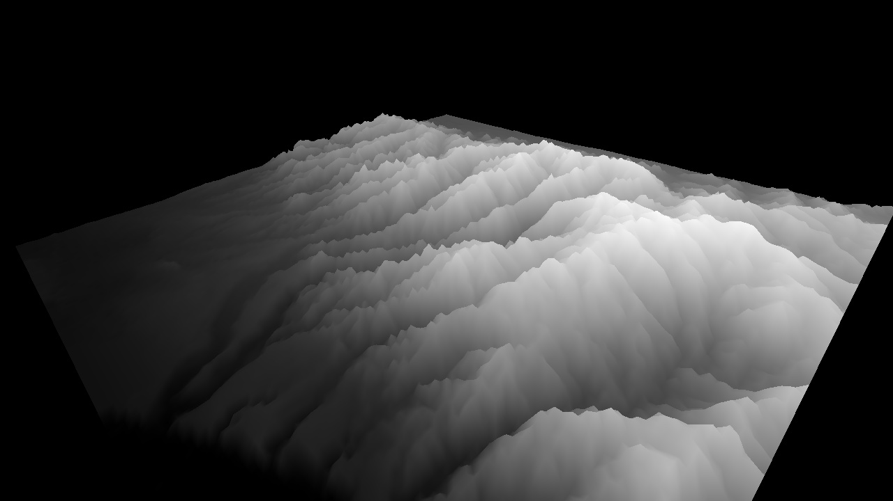
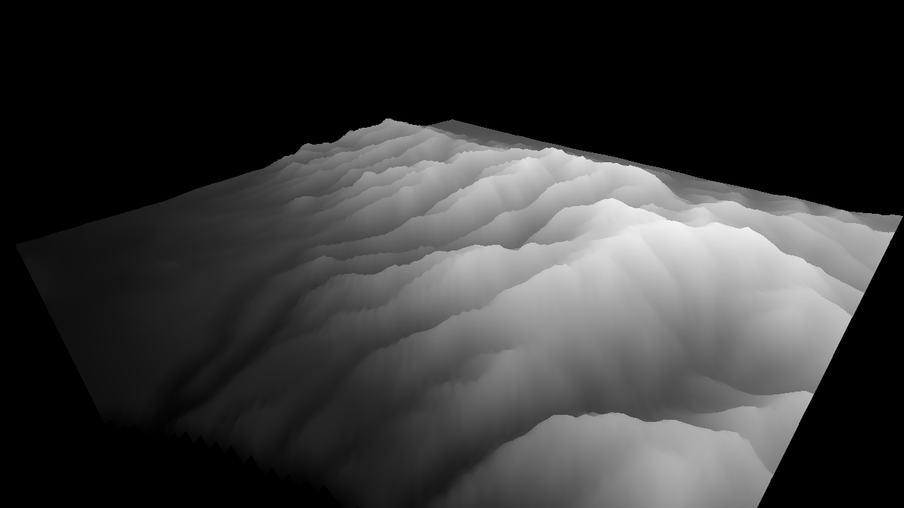

Height fields may be found in many applications of computer graphics. They are used to represent terrain in video games and simulations, and also often utilized to represent data in three dimensions. This assignment asks you to create a height field based on the data from an image which the user specifies at the command line, and to allow the user to manipulate the height field in three dimensions by rotating, translating, or scaling it. You also have to implement a vertex shader that performs smoothing of the geometry, and re-adjusts the geometry color. After the completion of your program, you will use it to create an animation. You will program the assignment using OpenGL's core profile.
This assignment is intended as a hands-on introduction to OpenGL and programming in three dimensions. It teaches the OpenGL's core profile and shader-based programming. The provided starter gives the functionality to initialize GLUT, read and write a JPEG image, handle mouse and keyboard input, and display one triangle to the screen. You must write code to handle camera transformations, transform the landscape (translate/rotate/scale), and render the heightfield. You must also write a shader to perform geometry smoothing and re-color the terrain accordingly. Please see the OpenGL Programming Guide for information, or OpenGL.org.
A height field is a visual representation of a function which takes as input a two-dimensional point and returns a scalar value ("height") as output.
Rendering a height field over arbitrary coordinates is somewhat tricky--we will simplify the problem by making our function piece-wise. Visually, the domain of our function is a two-dimensional grid of points, and a height value is defined at each point. We can render this data using only a point at each defined value, or use it to approximate a surface by connecting the points with triangles in 3D.
You will be using image data from a grayscale JPEG file to create your height field, such that the two dimensions of the grid correspond to the two dimensions of the image and the height value is a function of the image grayscale level. Since you will be working with grayscale image, the bytes per pixel (i.e., ImageIO::getBytesPerPixel) is always 1 and you don't have to worry about the case where the bytes per pixel is 3 (i.e., RGB images).
Your program needs to render the height field as points (when the key "1" is pressed on the keyboard), lines ("wireframe"; key "2"), or solid triangles (key "3"). The points, lines and solid triangles must be modeled using GL_POINTS, GL_LINES, GL_TRIANGLES, or their "LOOP" or "STRIP" variants. Usage of glPolygonMode (or similar) to achieve point or line rendering is not permitted. If in doubt, please ask the instructor/TA.
Points (key "1") |
Lines (key "2") |
Triangles (key "3") |
|  |  |  |
You should write a vertex shader that provides two rendering modes.
In the second mode (key "4"), do not scale the terrain height on the CPU; the height should equal 1.0 * heightmapImage->getPixel(i, j, 0) / 255.0f . In this mode, you should change the vertex position to the average position of itself and the four neighboring vertices -- do this in the vertex shader. Specifically, replace p_center with (p_center + p_left + p_right + p_down + p_up) / 5 (see image). This will have the effect of smoothening the terrain (the effect is most visible at low image resolutions, e.g., 128 x 128).

Furthermore, you should change the vertex color and height, also in the vertex shader, according to the formulas:
outputColor <--- pow(y, exponent) y <-- scale * pow(y, exponent),
where scale and exponent are two constants. These constants are shader uniform variables and must be provided to your shader from the CPU. You can use the provided helper function PipelineProgram::SetUniformVariablef to do this. In your program on the CPU, you should bind the keys as follows:
+ ... multiply the current "scale" by 2x - ... divide the current "scale" by 2x 9 ... multiply the current "exponent" by 2x 0 ... divide the current "exponent" by 2x
The initial values for "scale" and "exponent" should both be 1. Then, when user presses those keys, you should upload the new variable value to the GPU. The variables "scale" and "exponent" are only needed when using key "4", i.e., in the second mode -- you don't need them when using keys "1", "2", "3". In mode "4", you only need to support triangle rendering; you do not need to draw points or lines in this mode.
Finally, in the vertex shader, you should then transform the resulting vertex position with the modelview and projection matrix in the vertex shader as usual.
The positions of the four neighboring vertices should be passed into the vertex shader as additional attributes, in the same way as vertex position and color. In order to accommodate this, you should create additional VBOs. For example, one approach is to create 4 VBOs of 3-floats: position of the left vertex, right vertex, up vertex, down vertex. Note that these positions include the height of the vertex as one of its coordinates. If the position of the right vertex is off the image (this will happen on the image boundary), set the "position" of the right vertex to the position of the center vertex. Perform the equivalent operations also for the up/down vertices along the top and bottom edges of the image. The "scale" and "exponent" should be made available in the shader as uniform variables, as explained above.
You should write one vertex shader that satisfies the above requirements. In order to switch between the two modes, you should create a uniform variable "uniform int mode" in the vertex shader, and upload it to the GPU using PipelineProgram::SetUniformVariablei. When the user presses keys "1", "2" or "3", mode should be set to 0, and when the user presses key "4", mode should be set to 1. When mode=0, the vertex shader should execute the first mode described above. When mode=1, the vertex shader should execute the second mode (smoothen the vertex position and scale/exponentiate the terrain). You can achieve this using an "if" statement in the vertex shader.
You can download the starter code here: Starter code.
For the Windows platform, we provide the Visual Studio solution/project files in ./hw1. The files works on VS 2017, 2019 and 2022.
For Mac OS X, before you do any coding, you must install command-line utilities (make, gcc, etc.). Install XCode from the Mac app store, then go to XCode, and use "Preferences/Download" to install the command line tools. Most students use a text editor of their choice, and the Terminal to compile the homework on Mac.
On Linux, you need the libjpeg library, which can be obtained by "sudo apt-get install libjpeg62-dev libglew-dev". For Windows and Mac OS X, the starter code contains a precompiled jpeg library. On Intel-based Apple chips, the jpeg library should work as is. On Apple M1/M2/M3 ARM chips, you need to take the following steps to get jpeg library to compile and link:
// Do this for Apple ARM chips ONLY. If you don't do it, you will // get linker errors related to the libjpeg library. // The below steps are not necessary for Windows, Linux or Intel-based Apple computers. // Execute these commands only in a directory/path that does not contain any // spaces, otherwise it might fail. cd external/jpeg-9a-mac chmod +x configure ./configure --prefix=$(pwd) make clean make chmod +x install-sh make install cd ../../hw1 make ./hw1 heightmap/spiral.jpg
Here is a sample sequence of Ubuntu or Mac Terminal Shell commands that get everything compiled.
Make sure that the directory/path you are working in does not contain any spaces, otherwise these commands might fail:
> unzip assign1_coreOpenGL_starterCode.zip
> cd hw1
> make
> ./hw1 heightmap/spiral.jpg
If your OpenGL version is too low, try updating your graphics card driver to a more recent version. Nvidia drivers have been supporting OpenGL 3.2 since 2009. On the Mac, OpenGL core profile 3.2 is supported since Mac OS X 10.7.5.
Please email the TA if you have trouble compiling the starter code.
After successfully compiling the starter code and launching hw1, you should see a screen like this:

After finishing your program, you are required to submit a series of JPEG images which are screenshots from your program. Functionality to output a screenshot is included in the starter code, and assumes you are using a window size of 1280x720 -- your JPEG images must be this size. Please name your JPEG frames 000.jpg, 001.jpg, and so on, where 000.jpg is the first frame of your animation, and please do not exceed 300 frames. Expect a framerate of 15 frames per second, which corresponds to 20 seconds of animation running time maximum.
There is a large amount of room for creavitiy in terms of how you choose to show your results in the animation. You can use our provided input images, or modify them with any software you wish, or use your own input images. You may also use your animation to show off any extra features you choose to implement. Your animation will receive credit based on its artistic content, whether pretty, funny, or just interesting in some manner.
We will compile a video of all student submissions and show it in class. Optional: If you would like to convert your frames to a video by yourself, you can use Adobe Premiere, ffmpeg, QuickTime Pro, or Windows Movie Maker.
Please zip your code, readme and JPEG images into a single file and submit it to Brightspace. Include all files that were already in the starter code. Your submission should include the shader files, Makefiles, and all *.h and *.cpp files in all subfolders. Also include the compiled executable. The safest approach is to upload the entire homework folder. You can cut some space by not uploading the compiled object files (*.obj on Windows, *.o on Linux/Mac) and other intermediate files generated by the compiler such as *.pch files and similar. After submission, please verify that your zip file has been successfully uploaded. You may submit as many times as you like. If you submit the assignment multiple times, we will grade your LAST submission only. Your submission time is the time of your LAST submission; if this time is after the deadline, late policy will apply to it.
matrix->Perspective(fovy, aspect, 0.01, 1000.0);
A bad call would be:
matrix->Perspective(fovy, aspect, 0.0001, 100000.0);
or even worse:
matrix->Perspective(fovy, aspect, 0.0, 100000.0);
In the last two examples, the problem is that the ratio between the
distance of the far clipping plane (=last parameter to Perspective),
and the distance of the near clipping plane (=third parameter to Perspective)
is way too large. Since the z-buffer has only finite precision (only a finite
number of bits to store the z-value), it cannot represent such a large range.
OpenGL will not warn you of this. Instead, you will get all sorts of strange
artifacts on the screen and your scene will look nothing like what you
intended it to be.
You may choose to implement any combination of the following for extra credit.
Please note that the amount of extra credit awarded will not exceed 10% of the assignment's total value.
Input (source image) |
Output (height field), key "3" (triangles) |
Output (height field), key "4" (smoothened triangles) |
|  |  |  |
Key "3" (triangles) |
Key "4" (smoothened triangles) |
|  |  |
More inputs (real-world data): |
||||||||
|
||||||||
{kind=link}
{kind=link}
![[128]](SantaMonicaMountains-128.jpg){kind=link}
![[256]](SantaMonicaMountains-256.jpg){kind=link}
![[512]](SantaMonicaMountains-512.jpg){kind=link}
![[768]](SantaMonicaMountains-768.jpg){kind=link}
![[128]](GrandTeton-128.jpg){kind=link}
![[256]](GrandTeton-256.jpg){kind=link}
![[512]](GrandTeton-512.jpg){kind=link}
![[768]](GrandTeton-768.jpg){kind=link}
![[128]](OhioPyle-128.jpg){kind=link}
![[256]](OhioPyle-256.jpg){kind=link}
![[512]](OhioPyle-512.jpg){kind=link}
![[768]](OhioPyle-768.jpg){kind=link}
![[128]](Oahu-128.jpg){kind=link}
![[256]](Oahu-256.jpg){kind=link}
![[512]](Oahu-512.jpg){kind=link}
![[1024]](Oahu-1024.jpg){kind=link}
![[128]](Dalmatia-128.jpg){kind=link}
![[256]](Dalmatia-256.jpg){kind=link}
![[512]](Dalmatia-512.jpg){kind=link}
![[1024]](Dalmatia-1024.jpg){kind=link}
![[128]](Exuma-128.jpg){kind=link}
![[256]](Exuma-256.jpg){kind=link}
![[512]](Exuma-512.jpg){kind=link}
![[1024]](Exuma-1024.jpg){kind=link}